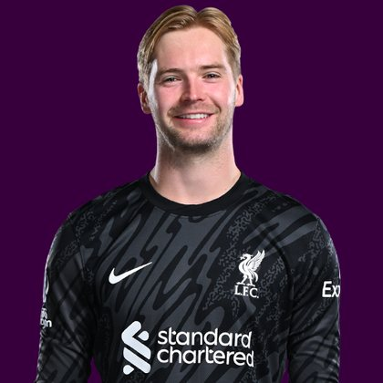

PITCHKEEP
Premier League ranks
Player File · GKP BRE · Premier #89

Caoimhín Kelleher
GKP · Brentford · age 27 · £5.0m
2025/26 Premier League
| Year | Starts | Min | G | A | xG | xA | CS | Saves | Bonus | YC | Sleeper | FPL |
|---|---|---|---|---|---|---|---|---|---|---|---|---|
| 2025/26 | 37 | 3330 | 0 | 0 | 0.0 | 0.22 | 10 | 109 | 11 | 1 | 242.2 | 143 |
Plus
- Sleeper 6 (242.2), 109 saves, 10 CS. The Pitch's keeper 1.01.
- Brentford every week. The volume is the point.
- Planet FPL 14 — at least one content board noticed the saves.
- 242.2 Sleeper BPL 2025 points (Pitch #6).
- 109 saves at 2 points each. That is why keepers crack this list.
Minus
- Consensus 73.56. The industry does not rank Brentford keepers like Arsenal keepers.
- Premier 29. Hybrid takes the save pile seriously and still will not put him in the first 20.
- xGI 324, price board 245. FPL has no interest. Know the format.
- Consensus 82.75 vs Sleeper #6 — the industry is cooler than last year's box score.
- Board spread 6–324 (Sleeper BPL 2025 to FPL xGI).
PitchKeep Take · The Premier
Caoimhín Kelleher is Sleeper's keeper test and The Premier's reality check. One hundred nine saves at 2 points each plus 10 clean sheets at 8 is 242.2 and Pitch #6, ahead of Rice, ahead of Pedro. Consensus 73.56. Hybrid 29. We believe the saves. We do not believe 24 FPL-shaped boards should be ignored so a Brentford goalkeeper can live in the first round.
Raya produced a similar Sleeper season in a better defensive structure and still only lands at 17 here. Kelleher's extra saves are real and so is Brentford's GA. The Premier is a hybrid, not a saves leaderboard. Twenty-nine is the number: start him in Sleeper, draft him as a keeper in FPL, do not take him over Watkins.
Instruction: smash the Sleeper pickup if he is available. Do not let a Pitch screenshot talk you into taking him over Gabriel. Different lists, different jobs. That is why there is a third one.
Caoimhín Kelleher is a goalkeeper for Brentford, age 27, £5.0m. The Premier ranks him 89th overall by splitting Sleeper BPL 2025 (#6, 242.2 points) with the consensus of 4 other boards (82.75). Last year's Sleeper line ran 77 spots ahead of the expert/FPL mix. The third list keeps some of that production bump and refuses to throw the other boards out. That is the whole point of not just republishing The Pitch.
The 2025/26 line is 37 starts, 3330 minutes, 109 saves, 10 clean sheets and 49 goals against. Official FPL scored it at 143 points (3.9 per match) with 11 bonus. Sleeper's table turned the same counting stats into 242.2. Keepers get 8 a clean sheet, 2 a save, and −2 a goal against. That is a different sport than FPL's 10-from-saves cap, and it is why this desk ranks them at all.
Sleeper vs FPL
Same 2025/26 line, two scoring tables
Board graph
Spread 6–324 · 12 sources
Tape · 2025/26 Premier League
Caoimhín Kelleher vs Nathan Collins 🔴 | 'Who Am I?' Brentford Teammates Quiz
Every Board
Spread 6–324 · 12 sources
| Source | Rank |
|---|---|
| Sleeper BPL 2025 | 6 |
| FPL EP Next | 26 |
| The Independent Watchlist | 28 |
| FPL 2025/26 Points | 34 |
| RotoWire FPL 400 | 47 |
| FPL Ownership | 63 |
| RotoWire Fantrax / Sleeper 400 | 63 |
| FPL Form | 86 |
| FPL ICT Index | 143 |
| RotoWire GW1 | 193 |
| FPL Price Board | 245 |
| FPL xGI | 324 |
PK News
All players · The Premier · The Pitch · PK News · Calculator